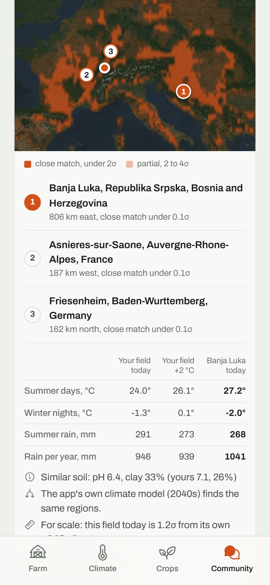
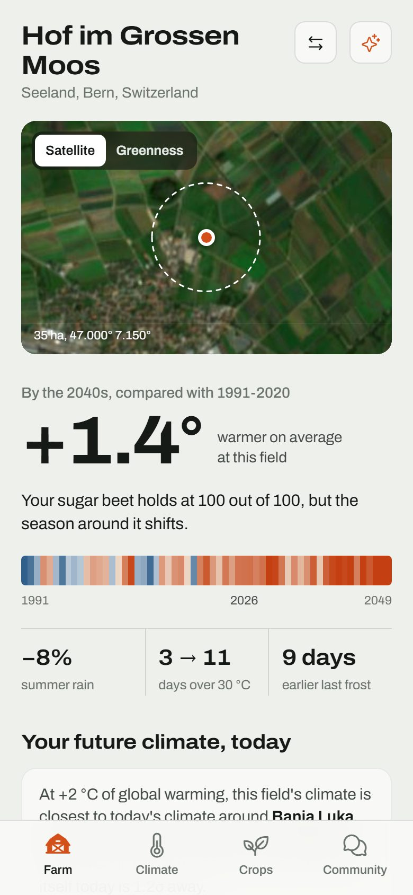
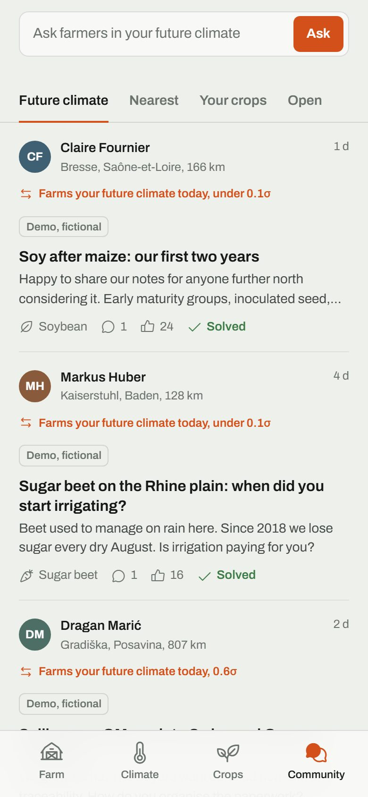
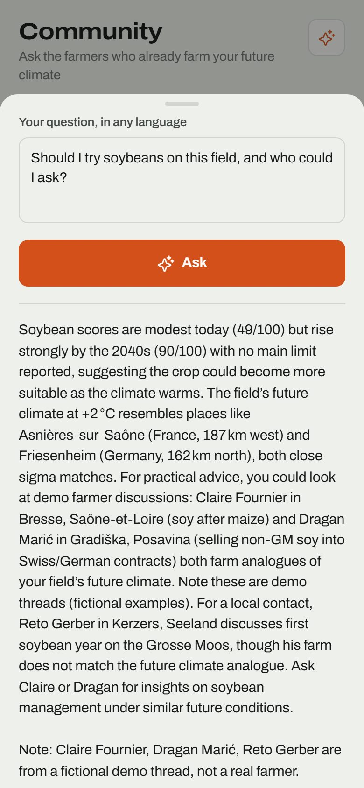
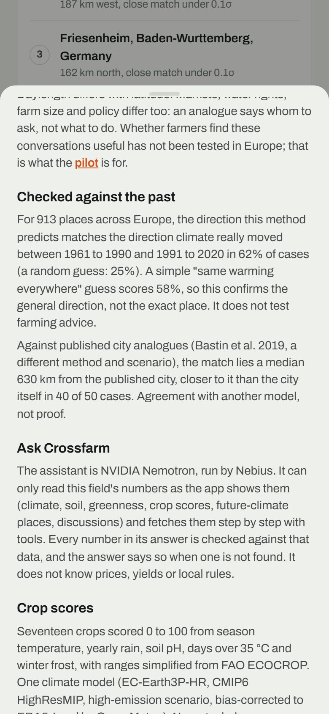

Your field's 2040s climate already exists somewhere.
Crossfarm finds where, and puts farmers in touch with the people who farm that climate today.
Leandro Catarci, ETH Zurich, on exchange at TU Delft. Try it: crossfarm.pages.dev

A farm in Seeland, Switzerland, is heading for the summers of Banja Luka.
Nobody around this farm has worked that climate. Farmers 806 km east have, for decades.
Summer days and the match: TerraClimate 1991 to 2020 plus the CMIP6 ensemble change at +2 °C of global warming. Days over 30 °C: one climate model (EC-Earth3P-HR), 2035 to 2049 against 1991 to 2020. Hof im Grossen Moos, a Crossfarm demo farm.

Maps already say what will grow. They do not say who has done it.
Farmers change practice when other farmers show them how (Wood et al. 2014). Without that step, climate information stays "useful but not usable" (Lemos et al. 2012).
Pick a field. See where its climate is today. Ask the farmers there.
Any point in Europe and around the Mediterranean, compared with 23,120 places on a 25 km grid.

The assistant reads the field, not the internet.
- Ask Crossfarm runs NVIDIA Nemotron with six tools over this field's climate, soil, satellite and crop data and the farmers in its future climate.
- Every number in an answer is checked against that data. An answer with a number the data does not contain is shown with a warning.
- Translation lets a farmer in Seeland read an answer written in Banja Luka.
- Next: learn from answered questions which matches helped, and send each new question to the farmers most likely to answer it well.

Checked against the past, and honest about the result.
| 62% | of 913 places in Europe: the method's predicted direction matches where their climate actually moved, 1961 to 1990 against 1991 to 2020 |
| 58% | a plain "same warming everywhere" guess |
| 25% | a random direction |
It confirms the direction, not the exact place. Whether the matched farmers give useful answers is what the pilot tests.
Back-test on TerraClimate normals with the app's own matching code. Method, limits and sources are in the app.

Built since 11 October. No farmers using it yet.
- Live web app for any field in Europe, installable on a phone, works offline once loaded.
- Per field: Sentinel-2 imagery, ISRIC soil, CMIP6 climate to 2049, MODIS greenness since 2001, 17 crops scored for today and the 2040s.
- Climate matching after Mahony et al. 2017, with a second climate model as cross-check.
- Shared community with translation, reporting and a pilot sign-up. The example threads are labelled as fictional.
- Open source under AGPL-3.0.
Started at a hackathon in Wageningen with a team of five from the Netherlands, Italy, Spain, Ireland and Switzerland.
Who pays: three guesses to test.
None of these is validated yet.
Climate does not stop at borders. Neither do the matches.
- Seeland, Switzerland matches Banja Luka in Bosnia and Herzegovina, Asnières-sur-Saône in France and Friesenheim in Germany.
- Gelderland, the Netherlands matches places in Saxony and in south-west France.
- Built on European data: Copernicus Sentinel-2 imagery, the EU's own climate adaptation agenda, farmers who speak different languages.
What happens next.
- Farmer interviews in matched regions, starting in Switzerland, the Netherlands and the Balkans.
- The first matched conversations, measured: did the answer change a decision?
- One partner who would pay, from the three guesses before.
What I want from the Lab week.
- Ten or more farmer interviews in matched regions before Demo Day.
- The first matched conversations, measured: did the answer change a decision?
- One partner who would pay, from the three guesses before.
Leandro Catarci, leandro@catarci.ch, crossfarm.pages.dev